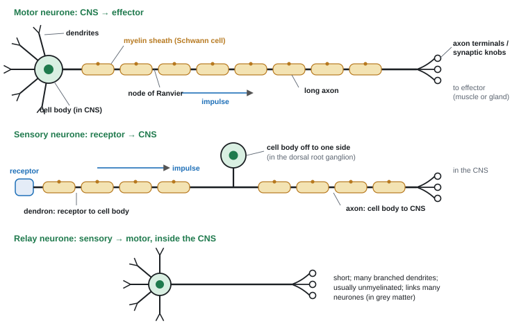
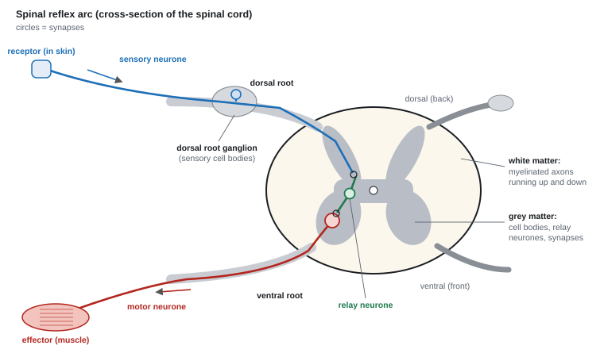
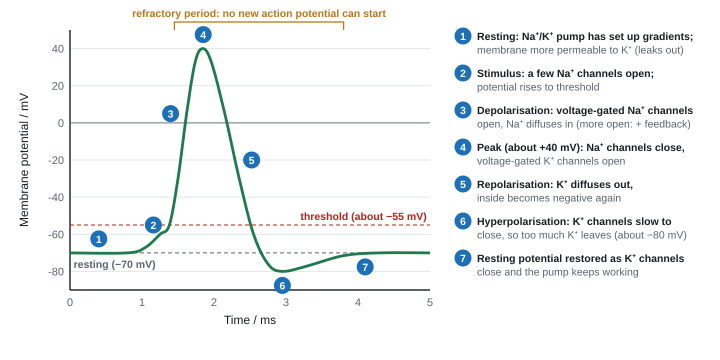
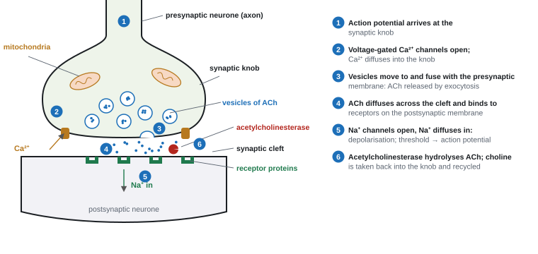
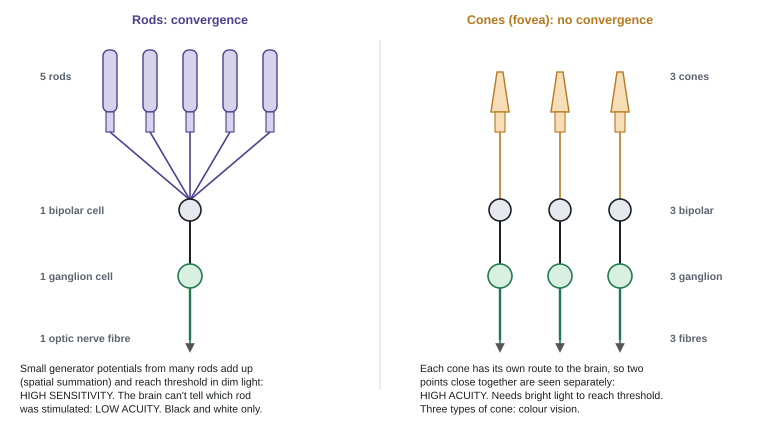
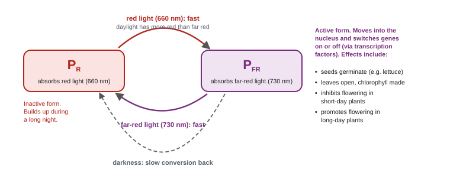
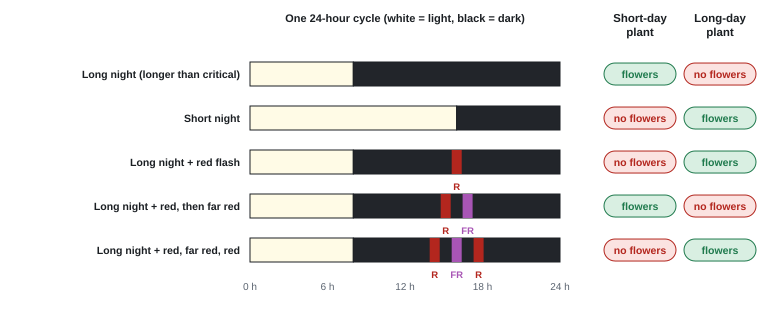
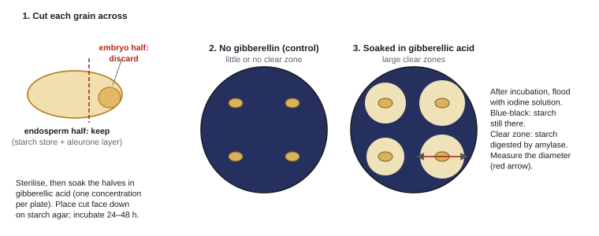
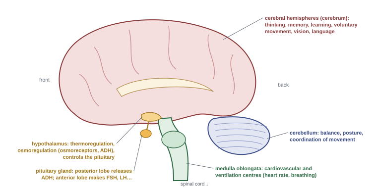

Nervous System and Coordination
Coordination means one part of the body responds to a change detected in another. This page covers neurones and synapses, the reflex arc and the nerve impulse, how drugs and light act on nerve cells, plant growth regulators, nervous and hormonal control, the human brain and brain imaging, and brain chemical imbalances.
Spec8.1Neurones: sensory, relay and motor; Schwann cells and myelin
Know how sensory, relay and motor neurones are built and what each one does, including how Schwann cells form the myelin sheath.
What every neurone has
- A neurone is a cell specialised to carry electrical impulses (action potentials). A nerve is a bundle of many axons wrapped in connective tissue. One nerve can carry both sensory and motor fibres.
- Cell body: contains the nucleus, plus lots of rough ER and mitochondria to make proteins and neurotransmitter.
- Dendrites: short, branched extensions that receive impulses from other neurones.
- Axon: a long extension that carries impulses away from the cell body.
- Axon terminals ending in synaptic knobs, which release neurotransmitter onto the next cell.
- Impulses travel one way: dendrites (or dendron) → cell body → axon → synaptic knobs.

The three types
| Sensory neurone | Relay neurone | Motor neurone | |
|---|---|---|---|
| Carries impulses | from a receptor to the CNS | from sensory to motor neurones (and to and from the brain) | from the CNS to an effector (muscle or gland) |
| Cell body | off to one side of the fibre, in the dorsal root ganglion just outside the spinal cord | in the middle, inside the CNS | at one end, inside the CNS (ventral horn of the spinal cord, or the brain) |
| Shape | long dendron (receptor to cell body) and a shorter axon (cell body to CNS) | short, with many branched dendrites | many dendrites on the cell body; one long axon |
| Myelinated? | yes | usually not | yes |
| Where | mostly in the PNS | entirely within the CNS (grey matter) | cell body in the CNS, axon in the PNS |
Schwann cells and the myelin sheath
- In the peripheral nervous system, Schwann cells wrap themselves round an axon many times. Each turn adds two more layers of the Schwann cell's plasma membrane, so the sheath is mostly phospholipid: a fatty electrical insulator that ions can't cross.
- A Schwann cell is flattened, with little cytoplasm, a lot of membrane and a high lipid content.
- Between neighbouring Schwann cells there are short gaps (about 1–2 µm) where the axon membrane is exposed: the nodes of Ranvier. Voltage-gated Na⁺ channels are packed into these nodes.
- Myelin makes impulses travel much faster (saltatory conduction, 8.5). Schwann cells also protect and support the axon.
Structure linked to function
- Long axon → carries the impulse a long way (up to about 1 m, spinal cord to foot) with no synapses on the way, so no delays.
- Many branched dendrites → receive impulses from many other neurones.
- Many axon terminals → pass the impulse on to many cells (e.g. many muscle fibres).
- Many mitochondria in the synaptic knob → ATP to make and recycle neurotransmitter and for exocytosis.
- Myelin → insulation → faster conduction.
Drawing a myelinated motor neurone (3 marks): cell body with dendrites at one end, a long axon with the myelin sheath broken into segments by nodes of Ranvier, and branched terminals with synaptic knobs at the other end. Rule the label lines, make each one touch its part, and only label what you're sure of.
- Function comparison: both "transmit (electrical) impulses / action potentials" and both "release neurotransmitter"; sensory neurones carry impulses "towards the CNS" from "receptors / sense organs"; motor neurones carry them "away from the CNS" to an "effector / muscle / gland". "Spinal cord" is accepted for CNS; "spine" isn't.
- Labels: "dendrites", "cell body" (centron and soma accepted), "axon", "(pre)synaptic knob / axon terminal". Writing "synapse" for the knob is rejected: a synapse is the junction.
- Myelin is made by "Schwann cells"; oligodendrocyte or glial cell was also accepted (WBI15 Oct 2025).
- Drawing: "myelin sheath with nodes of Ranvier", "cell body at one end and synaptic terminal at the other", two correct labels. Maximum 2 marks if you draw a sensory or relay neurone instead.
Often asked as: MCQ on which cell makes myelin; label a neurone diagram; draw a myelinated motor neurone; compare sensory and motor neurone function; pick out sensory, relay and motor neurones on a spinal cord diagram.
- Comparing structure (where the cell body is) when the question asks about function (which way the impulse goes and what it connects).
- Comparisons in separate paragraphs. Put both halves in one sentence: "sensory neurones carry impulses to the CNS, whereas motor neurones carry them away from it."
- "Messages" or "signals". Say impulses or action potentials.
- Label lines that stop short of the part, or an extra wrong label: a wrong label cancels a right one.
Examined in past papers even though the spec doesn't list it.
- Cell body positions on a spinal cord diagram: sensory in the dorsal root ganglion (outside the cord), motor in the ventral horn of the grey matter, relay in the grey matter (WBI15 Jan 2026).
- The old names centron (cell body) and dendron (the long fibre bringing impulses to a sensory cell body) still earn marks.
Spec8.2How the nervous system makes effectors respond
Understand how the nervous system detects a stimulus and makes an effector (a muscle or a gland) respond.
The chain
stimulus → receptor → sensory neurone → CNS (relay neurones) → motor neurone → effector → response
- Stimulus: a change in the internal or external environment (light, pressure, temperature, a chemical).
- Receptor: a cell, or the ending of a sensory neurone, that detects one kind of stimulus. It works as a transducer: it turns the energy of the stimulus into an electrical change across its membrane, the generator potential.
- Generator potentials are graded: a bigger stimulus gives a bigger generator potential.
- If the generator potential reaches threshold, an action potential starts in the sensory neurone.
- A stronger stimulus gives a higher frequency of action potentials, not bigger ones.
- CNS: receives the impulses, combines them with other information, and sends impulses out along the right motor neurones. In a reflex this is just one or two relay neurones; in a voluntary action the brain decides.
- Effector: a muscle (contracts) or a gland (secretes).
Example: a pressure receptor (Pacinian corpuscle)
- Pressure squashes the layers of the corpuscle and deforms the membrane of the sensory neurone ending inside it.
- The stretched membrane opens stretch-mediated Na⁺ channels.
- Na⁺ diffuses in → depolarisation: a generator potential.
- If it reaches threshold → action potentials travel along the sensory neurone to the CNS.
Examples of stimulus to response
| Stimulus | Receptor | Effector | Response |
|---|---|---|---|
| hand touches a hot plate | pain and heat receptors in the skin | biceps (skeletal muscle) | arm pulled away |
| bright light | rods and cones in the retina | circular muscle of the iris | pupil constricts |
| smell of food | chemoreceptors in the nose | salivary glands | saliva secreted |
| rise in blood CO₂ | chemoreceptors in the medulla, aorta and carotid arteries | diaphragm and intercostal muscles | faster, deeper breathing |
- Pressure receptor: "pressure deforms (cell) membranes (in the Pacinian corpuscle)", "(stretch-mediated) sodium ion channels open", "influx of sodium ions", then depolarisation, threshold, action potential (WBI15 Jun 2021).
- Unfamiliar receptor: "stimulus changes the shape of the membrane" → "ion channel (protein) changes shape / opens" → "influx of sodium (or calcium) ions" → "depolarisation / action potential" (WBI15 Oct 2022).
- Pain: detected by "nociceptors / pain receptors"; impulse along the sensory neurone; "relay neurone transmits the impulse to the brain, where it is perceived as pain". A motor neurone is rejected here.
- Sense organ: "a group of tissues working together" that "detects a stimulus / change in the environment".
Often asked as: never on its own. It comes up as "how does this receptor start an action potential?", receptor data (impulse frequency at different temperatures), and stimulus-to-response chains in the article question.
- Stopping at "the receptor detects the stimulus". Keep going: channels open, ions diffuse in, depolarisation, threshold, action potential, then the neurones.
- Saying a stronger stimulus gives a "bigger" action potential. It gives more action potentials per second.
Examined in past papers even though the spec doesn't list it.
- All-or-nothing in receptor data: at low pressure there was no action potential, while medium and high pressure gave the same peak (+40 mV) (WBI15 Jun 2021).
- Named receptors in new contexts: nociceptors v thermoreceptors firing at different temperatures (WBI15 Jan 2024); TRPV1 (heat) and Piezo (touch) channels (WBI15 Oct 2022 article). Calcium ions can be the depolarising ions.
Spec8.3The spinal reflex arc
Know the structure and function of a spinal reflex arc, including the grey matter and white matter of the spinal cord.
What a reflex is
- A rapid, automatic (involuntary) response to a stimulus, the same every time, with no conscious thought. It protects the body: pulling away from heat or a sharp object, blinking, coughing.
- The pathway is a reflex arc: receptor → sensory neurone → relay neurone → motor neurone → effector.
Why it's so fast
- Only three neurones and so only two synapses. Some reflexes (the knee jerk) have just one synapse: the sensory neurone synapses directly with the motor neurone.
- The impulse doesn't have to be processed by the conscious parts of the brain first, so there's no decision-making delay.
- The sensory and motor neurones are myelinated.
- The brain still finds out: the relay neurone also synapses with neurones that run up the white matter to the brain. That's why you feel the pain just after you've pulled your hand away.
The spinal cord

| Part | What it contains | Job |
|---|---|---|
| Grey matter (central, butterfly- or H-shaped) | cell bodies, dendrites, relay neurones, synapses; mostly unmyelinated | where sensory, relay and motor neurones connect |
| White matter (outer layer) | myelinated axons in bundles (tracts); myelin is fatty, so it looks white | carries impulses up to the brain and down from it |
| Dorsal root (back) | axons of sensory neurones | carries impulses into the cord |
| Dorsal root ganglion | a swelling on the dorsal root | holds the sensory neurone cell bodies |
| Ventral root (front) | axons of motor neurones | carries impulses out to effectors |
| Central canal | cerebrospinal fluid | not part of the grey matter |
Memory aid: sensory in at the back (dorsal), motor out at the front (ventral).
A withdrawal reflex, step by step
- A hot object stimulates pain receptors in the skin of a finger → generator potential → action potentials in the sensory neurone.
- The impulse travels along the sensory neurone, through the dorsal root (past its cell body in the ganglion) and into the grey matter.
- The sensory neurone synapses with a relay neurone in the grey matter.
- The relay neurone synapses with a motor neurone, whose cell body is in the ventral horn.
- The impulse leaves along the motor neurone axon, through the ventral root, to the effector.
- At the neuromuscular junction the biceps is stimulated to contract: the hand is pulled away.
- Every link is a synapse: "receptor cells synapse with the sensory neurone"; "sensory neurone synapses with relay neurone in the grey matter of the spinal cord"; "relay neurone synapses with motor neurone"; "motor neurone synapses with effector" (WBI15 Jan 2023). A correctly labelled diagram is accepted.
- Skin to CNS only: "impulse transmitted via the sensory neurone towards the spinal cord", "passes through the dorsal root ganglion", "synapses with relay neurone", "located in the grey matter" (WBI15 Jan 2024).
- Grey matter is the central butterfly region and white matter surrounds it; the central canal isn't grey matter.
Often asked as: MCQ on where the relay neurone is; describe the structure of a spinal reflex arc; describe the structures an impulse passes through from the skin to the CNS; mark cell body positions on a cord diagram.
Only about half of candidates got the grey-matter MCQ right (Jan 2022), and the examiners called the spinal reflex a weak area. Learn the table, and use the word synapse at every junction: "the sensory neurone synapses with a relay neurone in the grey matter".
- Describing how the impulse starts when the question asks which structures it passes through. Going past what was asked (motor neurone and effector when the question stops at the CNS) earns nothing.
- "A reflex doesn't involve the CNS." The spinal cord is part of the CNS; a reflex just doesn't need conscious thought.
Examined in past papers even though the spec doesn't list it.
- The dorsal root ganglion as the home of the sensory cell body, and a sensory neurone that synapses directly with a motor neurone (no relay neurone) (WBI15 Jan 2024).
Spec8.4The nerve impulse (action potential)
Understand how an action potential is produced and passed along an axon, including how the membrane's permeability to sodium and potassium ions changes.
The resting potential (about −70 mV)
At rest the inside of the axon is negative compared with the outside. The membrane is polarised. Three things set this up:
- The Na⁺/K⁺ pump (a carrier protein that uses ATP) actively transports 3 Na⁺ out for every 2 K⁺ in. This builds concentration gradients (Na⁺ high outside, K⁺ high inside) and removes more positive charge than it brings in.
- Different permeability: at rest the voltage-gated Na⁺ channels are closed, but some K⁺ channels are open, so the membrane is much more permeable to K⁺. K⁺ diffuses out down its concentration gradient, carrying positive charge out.
- Large negatively charged proteins stay inside.
K⁺ stops leaving when the outward concentration gradient is balanced by the attraction of the negative interior (an electrochemical balance).
The action potential

- Resting potential (−70 mV), as above.
- Stimulus: a few Na⁺ channels open, Na⁺ diffuses in, and the inside becomes less negative. If it reaches the threshold (about −55 mV)…
- Depolarisation: voltage-gated Na⁺ channels open. Na⁺ diffuses in fast, down its concentration and electrical gradients. Each bit of depolarisation opens more channels (positive feedback). The inside becomes positive.
- Peak (about +40 mV): the Na⁺ channels close (and can't reopen for a short time), and voltage-gated K⁺ channels open.
- Repolarisation: K⁺ diffuses out, so the inside becomes negative again.
- Hyperpolarisation: the K⁺ channels are slow to close, so too much K⁺ leaves and the potential overshoots to about −80 mV.
- The K⁺ channels close and the resting potential returns. The Na⁺/K⁺ pump keeps the concentration gradients topped up over many impulses.
The whole spike lasts about 2 ms.
Resting potential: the inside of the axon is about −70 mV compared with the outside. The sodium-potassium pump moves 3 Na+ out for every 2 K+ in, and K+ leaks out through open potassium channels. The voltage-gated Na+ and K+ channels are closed.
Depolarisation: a stimulus opens some sodium channels and Na+ diffuses in, so the inside becomes less negative. If the potential reaches the threshold of about −55 mV, voltage-gated sodium channels open.
If threshold is not reached, no action potential is produced and the membrane returns to rest.
Na+ floods in, which opens more voltage-gated sodium channels (positive feedback). The potential rises rapidly to about +40 mV, so the inside is now positive.
Repolarisation: the sodium channels close and are inactivated, and voltage-gated potassium channels open. K+ diffuses out, so the inside becomes negative again.
Hyperpolarisation: the potassium channels are slow to close, so too many K+ leave and the potential falls below the resting value, to about −80 mV.
Refractory period: while the sodium channels are inactivated, no new action potential can start (absolute refractory period). As they recover, only a larger than normal stimulus can start one (relative refractory period). The potassium channels close and the resting potential of −70 mV returns. The pump keeps the ion gradients topped up over many impulses.
The refractory period keeps impulses separate and makes them travel in one direction only.
How the impulse travels along the axon
- The Na⁺ that has rushed in at the active region spreads sideways inside the axon (local currents) to the next stretch of membrane.
- That stretch is depolarised to threshold, its voltage-gated Na⁺ channels open, and a new action potential fires there. So the action potential is regenerated at each point: a wave of depolarisation, not a current flowing down a wire.
- Refractory period: just behind the action potential, the Na⁺ channels are closed and can't be reopened for a moment, and the membrane is repolarising or hyperpolarised. This means:
- impulses travel in one direction only (the region behind can't fire again straight away);
- action potentials are separate (discrete) and don't merge;
- there's a maximum frequency of impulses.
All-or-nothing
- If threshold is reached, an action potential always fires and is always the same size (peak about +40 mV). Below threshold, nothing fires.
- The strength of a stimulus is coded by the frequency of action potentials (and by how many neurones fire), never by their size.
The interactive diagrams at the bottom of the page let you test threshold, the all-or-nothing rule and the refractory periods (action potential model), and see how several synapses add together (summation model).
What affects how fast an impulse travels
- Myelination (8.5): the biggest effect.
- Axon diameter: a wider axon has less resistance to the local currents (and less ion leakage per unit length), so it conducts faster. Squid giant axons work this way.
- Temperature: warmer → ions diffuse faster and channels open and close faster → faster conduction, up to about 40 °C. Much hotter and the channel proteins denature.
Worked example: conduction velocity
Two recording electrodes sit 30 mm apart on an axon. The action potential reaches the second electrode 0.50 ms after the first.
Speed = distance ÷ time.
Convert: 30 mm = 0.030 m; 0.50 ms = 0.000 50 s (5.0 × 10⁻⁴ s).
Speed = 0.030 ÷ 0.000 50 = 60 m s⁻¹.
Quick check: mm per ms is the same as m per s, and 30 ÷ 0.50 = 60.
Worked example: reading the graph
From the figure: resting potential −70 mV, peak +40 mV.
Change in potential during depolarisation = 40 − (−70) = 110 mV. Don't drop the minus sign.
Maximum frequency: if the refractory period is 2 ms (0.002 s), at most one action potential can start every 0.002 s, so the maximum frequency = 1 ÷ 0.002 = 500 per second.
Rate of change: draw a tangent at the steepest part and work out rise ÷ run, e.g. 9 a.u. ÷ 0.5 ms = 18 a.u. ms⁻¹, to 2 s.f. with units (WBI15 Jan 2025). Show the working: it earns a mark even if the final value is off.
- Resting potential: "active transport by the sodium-potassium pump" (Na⁺ out, K⁺ in); "diffusion of potassium ions out of the axon"; "so the inside is negatively charged"; "sodium channels closed", membrane "more permeable to K⁺". "Axon" is accepted for membrane.
- Why ATP is needed: "ATP is used by the sodium-potassium pump" "to move sodium and potassium ions across the membrane" "to establish concentration gradients".
- Producing an action potential (4 marks): "sodium ion channels open", "sodium ions diffuse in", "(positive feedback) more sodium ion channels open", "resulting in depolarisation", "reference to threshold". The word ion is needed (WBI15 Jan 2025).
- Reaching threshold: "the membrane potential becomes less negative"; "if it reaches threshold, depolarisation starts". Channels opening on their own isn't enough.
- Repolarisation: "sodium channels close", "potassium ions move out via (voltage-gated) potassium channels", "inside becomes negative". K⁺ moving in is rejected.
- All-or-nothing: "once threshold is reached", action potentials "either occur fully or not at all".
- Temperature: faster because "ion channels open and close more quickly" or "ions diffuse faster". Slower only through denaturation of the channel proteins.
- Toxin that blocks Na⁺ channels: "binds to (voltage-gated) sodium channels", "blocks diffusion of sodium ions into the axon", "depolarisation stays below threshold", "no action potential". Say sodium ions or sodium channels.
Often asked as: MCQs on traces (resting potential, which channels are open, which point is hyperpolarised); why the resting potential needs ATP; how −70 mV is maintained; production of an action potential; effect of a channel-blocking toxin; gradient of a graph; temperature and speed.
- "The pump gives the ions energy" or "ATP makes energy". Say ATP is used by the pump to set up concentration gradients.
- K⁺ moving into the axon during repolarisation. It moves out.
- Writing "sodium" or "potassium" with no "ions" or "channels".
- Long accounts of repolarisation and hyperpolarisation when the question only asked how an action potential is produced.
- Saying the pump quickly restores the resting potential after each spike. Closing K⁺ channels do that; the pump maintains the ion gradients over time.
Examined in past papers even though the spec doesn't list it.
- Tetrodotoxin (TTX, from pufferfish) blocks voltage-gated Na⁺ channels, so no action potentials (WBI15 Jun 2024, Jun 2025).
- Ion concentration tables, e.g. a ratio of K⁺ outside : inside (WBI15 Jan 2025).
- A metabolic poison that stops ATP production stops the pump, so the resting potential slowly runs down; washing the poison away restores it.
Spec8.5Myelination and saltatory conduction
Understand how myelin allows saltatory conduction, and why that makes impulses faster.
Without myelin
Every patch of membrane along the axon has to depolarise in turn: the local currents depolarise the very next patch, which fires, and so on. This is slow (about 0.5–2 m s⁻¹ in a thin axon).
With myelin
- The myelin sheath is an electrical insulator: ions can't move across the membrane where it's covered.
- So depolarisation (action potentials) can only happen at the nodes of Ranvier, where the voltage-gated Na⁺ channels are concentrated.
- Local currents flow inside the axon from one node to the next (about 1 mm), depolarising the next node to threshold.
- The action potential seems to jump from node to node: saltatory conduction (from the Latin for "to jump").
- Result: up to about 100 m s⁻¹ in vertebrate motor neurones.
It also saves energy
Ions only move at the nodes, so far fewer Na⁺ and K⁺ ions cross the membrane per impulse. The Na⁺/K⁺ pump has less to move back, so less ATP is used.
| Myelinated | Unmyelinated | |
|---|---|---|
| Where depolarisation happens | only at the nodes of Ranvier | along the whole membrane |
| Speed | fast (up to about 100 m s⁻¹) | slow (about 0.5–2 m s⁻¹ for a thin axon) |
| Ions moved and ATP used per impulse | less | more |
| Examples | most vertebrate sensory and motor neurones | many relay and autonomic neurones; invertebrate axons |
Below about 1 µm diameter, unmyelinated axons are actually faster; above it, myelinated axons win, and their speed rises much more steeply with diameter.
When myelin is lost
In multiple sclerosis (myelin in the CNS) and Guillain–Barré syndrome (myelin in the PNS), the sheath is damaged. Ions leak where the myelin has gone, local currents may not reach threshold at the next node, so impulses are slower and fewer reach the muscle or the brain. Symptoms: muscle weakness, poor coordination, numbness, blurred vision, difficulty walking.
Worked example: percentage difference in gradients
A graph of speed against axon diameter is a straight line for both kinds of axon. The myelinated line rises 120 units over 20 µm: gradient m = 120 ÷ 20 = 6. The gradient for unmyelinated axons is given as 0.5.
Percentage difference (relative to the unmyelinated gradient) = (6 − 0.5) ÷ 0.5 × 100 = 1100% (WBI15 Jan 2022).
Read the stem: here the difference was compared with the unmyelinated value. Many candidates worked out something else.
- The chain (3 of 4): "myelin (sheath) acts as an (electrical) insulator"; "ions cannot cross the axon membrane where there is myelin"; "depolarisation / action potentials only occur at the nodes of Ranvier"; "impulse jumps from node to node / saltatory conduction". The converse is accepted: "in an unmyelinated axon depolarisation occurs along the whole length".
- Saltatory conduction: "impulse jumps from one node to the next" or "depolarisation only at the nodes"; property of myelin: "(electrical) insulator" or "impermeable to ions" (WBI15 Oct 2025).
- Demyelination: "loss of myelin" → "slower conduction" → "fewer impulses reach the muscle / CNS" → a named loss of function. "Impulses are lost" and "no impulses" are ignored.
- Data on diameter and myelin: "the larger the diameter, the faster"; "myelination increases speed"; "myelination has a greater effect than diameter" (the point that separated candidates).
Often asked as: "Explain why a myelinated axon conducts faster than an unmyelinated axon of the same diameter" (3 marks, set at least three times); symptoms of a demyelinating disease; speed against diameter graphs; magnification of a nerve section.
- "The myelinated neurone is insulated." The mark is for the myelin acting as an insulator, and for saying what it stops: ion movement across the membrane.
- "It's faster because the impulse jumps", with no reason. Give the reason: depolarisation only happens at the nodes.
- In disease questions, "the neurone is unmyelinated" just repeats the stem. Explain the effect on impulses, then on the named function (walking, vision).
Examined in past papers even though the spec doesn't list it.
- Demyelinating diseases as contexts: Guillain–Barré syndrome, ADEM and multiple sclerosis (WBI15 Jun 2022, Oct 2023, Jun 2023).
- Magnification from a scale bar on a nerve section: 9.5 mm = 9500 µm; 9500 ÷ 50 = 190, written 1.9 × 10², with no units and not "×200" (WBI15 Jan 2024).
Spec8.6Synapses and the pupil reflex
(i) Know how synapses are built and how they pass on a nerve impulse, including the role of neurotransmitters such as acetylcholine. (ii) Understand how the pupil widens (dilates) and narrows (constricts).
Structure of a synapse
- A synapse is the junction between two neurones, or between a neurone and an effector cell.
- Presynaptic knob: many mitochondria (ATP), vesicles filled with neurotransmitter, and voltage-gated Ca²⁺ channels in its membrane.
- Synaptic cleft: a gap of about 20 nm.
- Postsynaptic membrane: receptor proteins complementary to the neurotransmitter.
- A synapse that uses acetylcholine (ACh) is a cholinergic synapse. The junction between a motor neurone and a muscle fibre (the neuromuscular junction) works the same way.

How an impulse crosses a cholinergic synapse
- An action potential arrives at the presynaptic knob and depolarises its membrane.
- Voltage-gated Ca²⁺ channels open, and Ca²⁺ diffuses into the knob (there's more Ca²⁺ outside).
- The Ca²⁺ makes vesicles move to and fuse with the presynaptic membrane. ACh is released into the cleft by exocytosis.
- ACh diffuses across the cleft and binds to complementary receptors on the postsynaptic membrane.
- The receptors are part of Na⁺ channels, which open. Na⁺ diffuses into the postsynaptic neurone → depolarisation. If enough ACh binds for the depolarisation to reach threshold, an action potential starts.
- The enzyme acetylcholinesterase in the cleft hydrolyses ACh into choline and ethanoate (acetate). These are taken back into the knob and made into ACh again, using ATP from the mitochondria. This stops the postsynaptic cell being stimulated non-stop, and frees the receptors for the next impulse.
What synapses do
- One-way transmission: vesicles are only in the presynaptic knob, and receptors only on the postsynaptic membrane.
- Summation: one impulse may not release enough transmitter to reach threshold.
- Spatial summation: several presynaptic neurones release transmitter onto the same postsynaptic neurone at once.
- Temporal summation: one presynaptic neurone fires several impulses in quick succession, so transmitter builds up.
- Convergence (many neurones onto one, e.g. rods, 8.8) and divergence (one neurone onto many).
- Inhibitory synapses: some transmitters open Cl⁻ or K⁺ channels instead. Cl⁻ in or K⁺ out hyperpolarises the postsynaptic membrane, so threshold is harder to reach.
- Synapses filter out weak background stimulation, and they are where drugs act (8.7) and where habituation happens (8.9).
The pupil reflex
The iris has two sets of smooth muscle that work as an antagonistic pair:
- circular muscle (a ring round the pupil): when it contracts, the pupil constricts;
- radial muscle (like the spokes of a wheel): when it contracts, the pupil dilates.
| Bright light | Dim light | |
|---|---|---|
| Detected by | rods and cones in the retina (high light intensity) | rods and cones (low light intensity) |
| Pathway | sensory neurones in the optic nerve → relay neurones in the brain (midbrain) → motor neurones | same route |
| Motor neurones | parasympathetic, to the circular muscle | sympathetic, to the radial muscle |
| Muscles | circular contracts, radial relaxes | radial contracts, circular relaxes |
| Pupil | constricts: less light enters, so the retina isn't damaged and not all the rhodopsin is bleached | dilates: more light enters, so the rods can still be stimulated |
This is a cranial reflex: the relay neurones are in the brain, not the spinal cord. It's automatic, and both pupils respond even if light reaches only one eye.
Worked example: pupil area
In dim light a pupil's diameter rises from 3.0 mm to 7.0 mm. Area of a circle = πr².
Before: r = 1.5 mm, area = π × 1.5² = 7.07 mm². After: r = 3.5 mm, area = π × 3.5² = 38.5 mm².
Percentage increase = (38.5 − 7.07) ÷ 7.07 × 100 = 444%.
Use the radius, not the diameter. To convert mm² to m², divide by 10⁶.
- Synapse (3–4 marks): "impulse causes calcium ion channels to open / calcium ions to enter (the presynaptic neurone)"; "vesicles (containing neurotransmitter) fuse with the presynaptic membrane"; "neurotransmitter released (by exocytosis) into the synaptic cleft and diffuses across"; "binds to receptors on the postsynaptic membrane"; "sodium ion channels open / sodium ions enter, causing depolarisation / an action potential". Any named neurotransmitter is accepted.
- Partly faulty calcium channels: "less calcium influx", "fewer vesicles fuse", "less neurotransmitter released", "fewer impulses". The scheme wanted "fewer", not "none".
- Bright light: "circular muscles contract and radial muscles relax", so the pupil gets smaller and less light enters. Dim light: the reverse. Name the muscles, call them antagonistic and state the light change. Sympathetic and parasympathetic were both credited for the motor neurone. Ciliary muscles are rejected.
Often asked as: describe transmission across a synapse (3–4 marks, in most series); the effect of faulty calcium channels or reduced dopamine release; MCQ on which channels open; describe and explain the pupil response; calculate a pupil area or its change.
- Leaving out the Ca²⁺ channels, the diffusion across the cleft, or the binding to receptors on the postsynaptic membrane: the most-missed marks.
- "Binds to the postsynaptic neurone" or "binds to the synapse". Say postsynaptic membrane. And vesicles don't cross the cleft: only the neurotransmitter does.
- Swapping radial and circular muscles; using "ciliary muscles" (they change the shape of the lens); not saying whether the light got brighter or dimmer.
- Absolute statements ("no vesicles fuse") when a channel is only partly faulty.
Examined in past papers even though the spec doesn't list it.
- A mutation in a calcium channel gene: changed amino acid sequence → changed channel shape → less Ca²⁺ influx → fewer vesicles fuse → less transmitter (WBI15 Jun 2022).
- Different neurotransmitters need different receptors because each receptor has a specific 3-D shape complementary to its transmitter (WBI15 Jun 2022 article).
- Sympathetic neurones release noradrenaline at their effectors; parasympathetic neurones release acetylcholine (WBI15 Jan 2026 MCQ on a neurotransmitter pair).
- Pupil dilation as a measure of mental effort (WBI15 Oct 2025).
Spec8.7Drugs and synaptic transmission
Understand how drugs can act by changing nerve impulse transmission: nicotine, lidocaine, cobra venom alpha toxin, L-DOPA for Parkinson's disease, and MDMA (ecstasy).
Ways a drug can change transmission
| Increase transmission | Decrease transmission |
|---|---|
| mimic the neurotransmitter and activate its receptor (an agonist) | bind to the receptor without activating it, blocking the transmitter (an antagonist) |
| supply a precursor, so more transmitter is made | stop the transmitter being made |
| trigger more release of the transmitter | stop its release (e.g. botulinum toxin stops ACh release) |
| block the enzyme that breaks the transmitter down | block voltage-gated Na⁺ channels, so no action potential |
| block reuptake of the transmitter into the presynaptic neurone |
The five named drugs
| Drug | Target | What it does | Effect |
|---|---|---|---|
| Nicotine | nicotinic ACh receptors on postsynaptic membranes | similar shape to ACh, so it binds and opens the receptor's Na⁺ channel → depolarisation and action potentials (agonist). Acetylcholinesterase doesn't break it down, so it acts for longer | stimulant; causes dopamine release in the brain's reward pathway (pleasure, addiction); raises heart rate and blood pressure |
| Lidocaine | voltage-gated Na⁺ channels in neurone membranes | blocks them → Na⁺ can't diffuse in → no depolarisation → no action potentials | local anaesthetic: impulses from pain receptors don't reach the brain; also used to treat irregular heart rhythms |
| Cobra venom α-toxin | ACh receptors at neuromuscular junctions | binds very tightly but doesn't open the channel, so ACh can't bind (antagonist) → no depolarisation of the muscle fibre | muscles can't contract: paralysis, including the diaphragm and intercostal muscles, so breathing stops |
| L-DOPA | dopamine-releasing neurones in the brain | a precursor of dopamine; it crosses the blood–brain barrier (dopamine can't) and is converted to dopamine by an enzyme (dopa decarboxylase) in the brain | more dopamine released → restores control of movement in Parkinson's disease |
| MDMA (ecstasy) | serotonin reuptake transporters in presynaptic membranes | blocks reuptake of serotonin and makes the transporters run backwards, releasing extra serotonin into the cleft | serotonin stays in the cleft and keeps binding postsynaptic receptors → more action potentials → raised mood, euphoria |
L-DOPA in more detail
- In Parkinson's disease, dopamine-releasing neurones in the substantia nigra (midbrain) die, so less dopamine is released in the parts of the brain that control movement.
- Giving dopamine doesn't work: it can't cross the blood–brain barrier.
- L-DOPA does cross it. The remaining dopamine neurones take it up and convert it to dopamine → more dopamine released → more binds to receptors → more action potentials → better control of muscle movement (less tremor and stiffness).
- It treats the symptoms, not the cause: the neurones keep dying, so it works less well over time.
- It's usually given with carbidopa (or benserazide, as in co-beneldopa). These inhibit the decarboxylase enzyme outside the brain and can't cross the blood–brain barrier themselves. So less L-DOPA is converted to dopamine in the blood and gut, more L-DOPA reaches the brain, a lower dose works, and there are fewer side effects.
MDMA in more detail
- Normally, serotonin is released, binds to postsynaptic receptors, and is then taken back into the presynaptic neurone by transporter proteins (reuptake).
- MDMA is absorbed into the blood, crosses the blood–brain barrier, and binds to the transporter. Reuptake stops and extra serotonin is released, so the serotonin concentration in the cleft stays high.
- Side effects: raised body temperature, raised heart rate, and extra ADH secretion (so less urine; with a lot of water drunk, the blood can become dangerously dilute). Afterwards serotonin stores are used up, so mood drops.
Worked example: predicting the effect of an unfamiliar drug
Drug X inhibits acetylcholinesterase. Predict its effect at a neuromuscular junction.
- Acetylcholinesterase can't hydrolyse ACh, so ACh stays in the cleft.
- ACh keeps binding to the receptors, so the Na⁺ channels stay open.
- The muscle fibre membrane stays depolarised and keeps being stimulated → continuous contraction (spasm). Eventually the membrane can't repolarise, so the muscle stops responding.
Method: find which step the drug changes → what happens to the amount of transmitter bound to receptors → Na⁺ entry / depolarisation → action potentials → the effect on the person.
Worked example: dose on a log scale
A dose–response graph has log₁₀ (dose) on the x-axis. The dose giving half the maximum effect (ED₅₀) reads as log dose 3.8 for one drug and 3.5 for another.
Convert back with the antilog: 10³·⁸ = 6310 and 10³·⁵ = 3162. Difference = 3147 (WBI15 Jan 2026).
You can't subtract the logs (3.8 − 3.5 = 0.3) and call that the difference in dose. A log scale is used so a very wide range of doses fits on one graph.
- L-DOPA: "dopamine cannot cross the blood–brain barrier"; "L-DOPA can cross the blood–brain barrier"; "converted to dopamine in the brain"; "restores control of muscle movement / reduces tremor". "Reduces symptoms" is in the stem and earns nothing.
- Carbidopa (or the partner drug in co-beneldopa): "prevents L-DOPA being broken down (in the blood / gut)", so "more L-DOPA reaches the brain" and "a lower dose" can be given (WBI15 Oct 2024, Jun 2022).
- Nicotine: "binds to ACh receptors", "similar structure to ACh", "causes action potentials". "Nicotine blocks receptors" is ignored. With the receptor gene knocked out, nicotine has no effect because there are no receptors to bind to (WBI15 Jan 2024).
- Cobra venom: "binds to the ACh receptor" but "does not stimulate impulses" (WBI15 Jan 2026).
- Lidocaine: "inhibits / blocks sodium ion channels" → fewer impulses → less contraction of heart muscle → less ATP and O₂ needed (WBI15 Jan 2025).
- MDMA by mouth: "absorbed into the blood", "crosses the blood–brain barrier", "MDMA (not serotonin) binds to neurones", "stimulates release of serotonin" (WBI15 Jun 2023).
Often asked as: MCQs on how each drug acts; how L-DOPA reduces symptoms; why carbidopa is added; knock-out mice and nicotine; dose–response graphs (log scale, ED₅₀, LD₅₀).
- Mixing up lidocaine and cobra venom. Lidocaine blocks voltage-gated Na⁺ channels in the axon, so no action potential forms at all. Cobra α-toxin blocks ACh receptors on the postsynaptic membrane: the impulse reaches the synapse but can't cross it.
- Thinking carbidopa stops a dopamine overdose. It stops L-DOPA being converted too early, outside the brain.
- Calling nicotine a neurotransmitter. It's a drug that mimics one.
- Starting in the brain. For a drug taken by mouth, start with absorption from the gut into the blood, then the blood–brain barrier, then the synapse.
- If strychnine comes up: it blocks inhibitory glycine receptors. It is not an acetylcholinesterase inhibitor, whatever some notes say.
Examined in past papers even though the spec doesn't list it.
- The blood–brain barrier: brain capillary walls have tightly joined endothelial cells, so most drugs (and dopamine) can't pass (WBI15 Jun 2022).
- LD₅₀: the dose that kills 50% of a test population (WBI15 Jun 2025).
- Caffeine: absorbed into the blood, crosses the blood–brain barrier, blocks adenosine receptors, so more action potentials (WBI15 Jan 2025 article).
Spec8.8Detecting light: rods in the retina
Understand how rod cells detect light: the roles of rhodopsin (opsin + retinal), sodium ions, cation channels and hyperpolarisation of the rod in producing action potentials in the optic neurones.
The retina
- Light is focused by the lens onto the retina. Light passes through two layers of neurones before it reaches the photoreceptors at the back: ganglion cells (whose axons form the optic nerve), then bipolar cells, then the rods and cones.
- Rods: about 120 million per eye, mostly round the edge (periphery); work in dim light; black and white only.
- Cones: about 6 million, packed into the fovea; need bright light; give colour vision.
- Blind spot: where the optic nerve leaves the eye. There are no photoreceptors there.
Rhodopsin
- Rhodopsin = opsin (a protein) + retinal (a light-absorbing molecule made from vitamin A). It sits in the membranes of stacked discs in the rod's outer segment.
- In the dark, retinal is in the cis form. When it absorbs light it changes shape to trans-retinal, and rhodopsin breaks into opsin + trans-retinal: it is bleached.
- In the dark, enzymes turn trans-retinal back into cis-retinal, which rejoins opsin. This needs ATP and takes time, which is why your eyes take minutes to adapt to the dark.
In the dark
- Cation (Na⁺) channels in the rod's outer membrane are open.
- Na⁺ diffuses in, while the Na⁺/K⁺ pump in the inner segment keeps pumping it out. With Na⁺ leaking in all the time, the rod is only slightly negative inside (about −40 mV): it is depolarised.
- The depolarised rod keeps releasing a neurotransmitter (glutamate) onto the bipolar cell.
- Glutamate inhibits the bipolar cell, so no impulses pass to the optic neurone.
In the light
- Rhodopsin absorbs light: cis-retinal → trans-retinal, and rhodopsin splits into opsin + retinal.
- The freed opsin starts a chain of reactions in the rod that closes the cation (Na⁺) channels.
- The pump keeps pumping Na⁺ out, but Na⁺ can no longer leak in, so the inside becomes more negative: the rod is hyperpolarised (about −70 mV).
- The hyperpolarised rod stops releasing glutamate.
- The bipolar cell is no longer inhibited. It depolarises and releases its own transmitter onto a ganglion cell.
- The ganglion cell depolarises → action potentials in the optic neurone → brain.
| Dark | Light | |
|---|---|---|
| Rhodopsin | intact (cis-retinal) | split into opsin + trans-retinal |
| Na⁺ (cation) channels in the rod | open | closed |
| Rod membrane | depolarised (about −40 mV) | hyperpolarised (about −70 mV) |
| Glutamate release | continuous | stops |
| Bipolar cell | inhibited | depolarised |
| Optic neurone | no action potentials | action potentials |
The rod is unusual: it is hyperpolarised by its stimulus, the opposite of most receptors.
Rods and cones compared

| Rods | Cones | |
|---|---|---|
| Pigment | rhodopsin: broken down by low light intensity | iodopsin, three types (red-, green- and blue-sensitive): needs high light intensity |
| Wiring | several rods → one bipolar cell (retinal convergence) | one cone → one bipolar cell (at the fovea) |
| Sensitivity | high: small generator potentials from several rods summate (spatial summation) to reach threshold in dim light | low |
| Visual acuity (detail) | low: the brain can't tell which rod in the group was stimulated | high: each cone has its own route to the brain |
| Colour | no | yes |
| Where | periphery of the retina | fovea |
Worked example: number of rods
5000 photoreceptors are counted in a section of retina, and 5/6 of them are rods. Rods = 5/6 × 5000 = 4166.7, so 4167 rods.
A number of cells must be a whole number: 4166.7 lost the mark (WBI15 Jun 2024).
- The chain (any 3–4): "rhodopsin absorbs light"; "(cis-retinal converted to trans-retinal) rhodopsin splits into opsin and retinal"; "sodium ion channels (in the membrane) close" (or "permeability to sodium ions decreases"); "more sodium ions are pumped out than diffuse in"; "rod cell becomes hyperpolarised"; "no glutamate (neurotransmitter) released"; bipolar cell depolarises → action potentials in the optic neurone.
- ATP is used for "active transport of sodium ions" (reforming rhodopsin is also accepted) (WBI15 Oct 2025).
- Rhodopsin = opsin + retinal; trans-retinal is the form made when light is absorbed.
- Rods v cones in animals: rods detect low light; cones need bright light and give colour vision; an animal active by day has more cones, one active at night more rods (WBI15 Jun 2024).
Often asked as: describe the role of rhodopsin (3–4 marks, set repeatedly); describe how light is detected by rods; MCQs on the pigment, the channel state and which cell is hyperpolarised; rods and cones data.
- "Opsin blocks the sodium channels." The examiners reject this: opsin sets off reactions that close the channels. (One recent mark scheme let the phrase slip in; don't copy it.)
- "Light opens the sodium channels" or "sodium ions are taken up in the light". It's the reverse: light closes the channels and the rod hyperpolarises.
- Mixing up the rod (hyperpolarised in light) and the bipolar cell (depolarised in light).
- Going on to describe transmission along the optic nerve when the question only asks how rods detect light.
Examined in past papers even though the spec doesn't list it.
- RPE65, an enzyme that regenerates cis-retinal: a mutation changes its active site so it no longer fits trans-retinal, rhodopsin can't re-form, and the rods have no working pigment. Gene therapy restored some vision (WBI15 Jan 2021).
- Glutamate as the rod's transmitter, and recordings from bipolar cells that depolarise in light (WBI15 Oct 2021).
Spec8.9Habituation
Understand what is meant by habituation. (Recommended additional practical: investigate habituation to a stimulus.)
What it is
- Habituation is a reduced response to a stimulus that is repeated but harmless (neither threatening nor rewarding). It's a simple form of learning.
- Why it helps: the animal stops wasting energy and time on stimuli that don't matter (wind moving the grass, traffic noise), so it can feed, mate and stay alert to real threats.
- It is specific to that stimulus: a new or stronger stimulus still triggers the full response, and the response recovers after a rest. This is how you know the animal isn't simply tired or injured.
- Examples: a sea slug (Aplysia) stops withdrawing its gill when its siphon is touched again and again; snails stop pulling in their tentacles; birds ignore a scarecrow; you stop noticing your clothes.
What happens at the synapse
- Repeated stimulation makes the Ca²⁺ channels in the presynaptic membrane less responsive, so fewer open.
- Less Ca²⁺ enters the presynaptic knob.
- Fewer vesicles fuse with the presynaptic membrane, so less neurotransmitter is released.
- Less transmitter binds to the postsynaptic receptors, so fewer Na⁺ channels open and the depolarisation doesn't reach threshold.
- No action potential in the motor neurone, so no response from the effector.
The receptor and the sensory neurone still fire normally: the change is at the synapse.
Recommended practical: habituation in snails
- Let each snail settle (acclimatise) for 10 minutes on a damp surface, in the same conditions.
- Touch the snail gently between the tentacles with a damp cotton bud, using the same force (e.g. the bud on a rod moved a fixed distance) and the same spot each time.
- Start a stopwatch. Record the time until the tentacles are fully extended again.
- Touch it again as soon as they're fully out (or at a fixed interval, e.g. every minute). Repeat for 10–15 touches.
- Repeat with at least five other snails and work out the mean time for each touch number.
- Plot mean time to re-emerge (y) against touch number (x).
Expected result: the time to re-emerge falls as the touches are repeated.
Variables
| Independent | number of times the stimulus has been given (touch number) |
| Dependent | time for the tentacles to extend fully again (or: duration of withdrawal; % of animals responding) |
| Control | same snail for a whole run; same object, force and spot; same interval between touches; temperature; light intensity; humidity; noise and vibration; snails of similar size from the same place |
Evaluation and ethics
- A touch by hand is hard to standardise, and "fully extended" is a judgement: decide on a clear end point first.
- Other stimuli (shadows, vibration, sound) can make the snail withdraw: work somewhere quiet and still.
- Show it's habituation, not fatigue: once the response has faded, give a different stimulus (another spot, a stronger touch). The full response comes straight back.
- Ethics: handle gently, keep the snails moist and cool, use a stimulus that can't hurt them, keep the number of trials low, and return them to where they were found.
- Analysis: a correlation test (Spearman's rank) between touch number and time.
Worked example: percentage difference
After habituation, 20 roundworms in group 1 and 12 in group 2 responded to a tap.
Using the formula given (difference ÷ mean of the two values × 100): mean = (20 + 12) ÷ 2 = 16, so (20 − 12) ÷ 16 × 100 = 50% (WBI15 Jan 2024).
Use whichever formula the question gives. "Percentage change" uses the starting value as the denominator.
- Definition: "a {repeated / prolonged / non-threatening} stimulus" results in "a decreased response". "Saves energy" isn't credited for the definition (WBI15 Jan 2026).
- Mechanism: "calcium ion channels become less responsive", "less Ca²⁺ enters the presynaptic knob", "fewer vesicles fuse", "less neurotransmitter released", "threshold not reached", "no action potential in the postsynaptic (motor) neurone".
- Recovery data: give the overall trend, the change in steepness ("steeper rise up to 10 min, slower after"), the comparison between groups, and whether any group fully recovered.
- Test for "number of encounters against % response": a correlation coefficient (WBI15 Jun 2021).
Often asked as: define habituation; MCQ on its advantage; data on habituation or recovery (crabs, roundworms, rats, fish, children); percentage difference; the right statistical test. The practical is planned in Unit 6 (sea slugs, woodlice, fish).
- "The animal gets tired" or "the receptor stops working". The receptor still fires; transmission at the synapse falls, and a new stimulus brings the response straight back.
- Mixing up the recovery curve with the habituation curve when reading data.
Examined in past papers even though the spec doesn't list it.
- Habituation questions sit next to other kinds of learning, such as rats learning a maze for a food reward (WBI15 Jan 2026).
- Habituation can be harmful: elk that habituate to traffic are more likely to be hit (WBI15 Jan 2026).
Spec8.10The central and peripheral nervous systems
Know that the mammalian nervous system is made of the central nervous system (CNS) and the peripheral nervous system (PNS).
- CNS = brain + spinal cord. It contains the relay neurones, combines incoming information and sends out instructions. It's protected by the skull and vertebrae.
- PNS = all the nerves outside the CNS (cranial and spinal nerves). It contains:
- sensory neurones, carrying impulses from receptors to the CNS;
- motor neurones, carrying impulses from the CNS to effectors.
The motor side of the PNS has two parts:
| Somatic | Autonomic | |
|---|---|---|
| Effectors | skeletal muscle | smooth muscle (gut, iris, blood vessels), cardiac muscle, glands |
| Control | mostly voluntary (plus spinal reflexes) | involuntary |
The autonomic system has two divisions, which often have opposite effects on the same organ. Both are active all the time; the balance between them sets things like heart rate and pupil size.
| Sympathetic ("fight or flight") | Parasympathetic ("rest and digest") | |
|---|---|---|
| Transmitter at the effector | mostly noradrenaline | acetylcholine |
| Heart (SAN) | speeds up | slows down (via the vagus nerve) |
| Pupil | dilates (radial muscle contracts) | constricts (circular muscle contracts) |
| Airways | widen | narrow |
| Gut | digestion slowed | digestion increased |
This point is never examined on its own, but the sympathetic/parasympathetic split comes up again and again: heart rate (7.13), the pupil reflex (8.6) and article questions.
- The autonomic nervous system and resting breathing rate: "chemoreceptors detect CO₂ / pH" → "impulses to the ventilation centre in the medulla" → "impulses to the intercostal muscles and diaphragm" (WBI15 Jun 2022 article). Note the word "resting".
- A sympathetic nerve acting on an organ: "releases neurotransmitter (e.g. noradrenaline)" which acts on the target cells. Don't skip the neurotransmitter step.
Often asked as: only inside heart-rate, pupil and article questions (2020–2026).
- Swapping the divisions: parasympathetic constricts the pupil and slows the heart; sympathetic dilates the pupil and speeds the heart up.
- Treating every reflex as autonomic: the withdrawal reflex uses somatic motor neurones to skeletal muscle.
Examined in past papers even though the spec doesn't list it.
- The enteric nervous system (the gut's own network of neurones) as part of the autonomic nervous system (WBI15 Jun 2022 article).
Spec8.11Plant responses: phytochrome, auxin and gibberellins
Understand how phytochrome, auxin (IAA) and gibberellins bring about responses in plants, including their effects on transcription.
Plants have no nervous system. They respond to stimuli mainly by changing how they grow, coordinated by plant growth regulators (plant hormones). These are made in growing tissues and move by diffusion, active transport or in the phloem. Many work by switching genes on or off.
Phytochrome

- Phytochrome is a photoreceptor pigment (a protein with a light-absorbing part). It is not a hormone. It exists in two forms that convert into each other:
- Pr absorbs red light (660 nm) and is quickly converted to Pfr;
- Pfr absorbs far-red light (730 nm) and is quickly converted back to Pr;
- in the dark, Pfr slowly turns back into Pr.
- Pfr is the active form.
Reasoning with red and far-red light
- Daylight contains more red than far-red light, so Pr → Pfr wins: Pfr builds up during the day.
- At night there's no light, so Pfr slowly reverts to Pr. The longer the night, the less Pfr is left by morning. The plant "measures" night length by how much Pfr remains.
- Under other leaves, the canopy absorbs red light but lets far-red through. Pfr stays low, and the seedling grows tall and thin towards the light (shade avoidance).
- Underground there's no light, so no Pfr: the seedling is etiolated (long, pale stem; leaves unopened). On reaching light, Pfr forms → leaves open, chlorophyll is made, stem growth slows.
How Pfr changes transcription
- Pfr moves from the cytoplasm into the nucleus.
- It binds to transcription factors (called PIFs, phytochrome-interacting factors) and changes their activity, so some genes are switched on and others off.
- In a germinating seed, for example, genes for gibberellin synthesis are switched on, and gibberellin then switches on the amylase gene (below).
Germination
- Small seeds such as lettuce have few food reserves and must germinate near the surface. They germinate only when they get red light, a sign that they're near the surface and not shaded.
- Red flash → Pfr → germination. Red then far-red → Pfr converted back → no germination. Red, far-red, red → germination. The last flash decides.
Flowering (photoperiodism)
- Plants flower in the right season by sensing night length. The critical night length is the night length that switches flowering on or off.
- Short-day plants (better called "long-night" plants, e.g. chrysanthemum): flower when the night is longer than the critical night length. A long night lets Pfr fall to a low level. In short-day plants Pfr inhibits flowering, so low Pfr allows it.
- Long-day plants ("short-night" plants, e.g. spinach): flower when the night is shorter than the critical night length, so Pfr stays high. In long-day plants Pfr promotes flowering.
- Night-break experiments: a flash of red light in the middle of a long night converts Pr back to Pfr, so Pfr is high again. A short-day plant then doesn't flower; a long-day plant does. A far-red flash straight after the red converts the Pfr back to Pr and cancels the red flash. Again, the last flash decides.

Auxin (IAA)
- Made in shoot tips and young leaves; moves down the shoot by diffusion and active transport.
- Stimulates cell elongation in shoots (not cell division). In roots, high concentrations inhibit elongation.
- How it makes a cell elongate (acid growth):
- IAA binds to a receptor on the cell surface membrane.
- This activates proton pumps (using ATP): H⁺ ions are actively pumped out of the cytoplasm into the cell wall.
- The wall becomes acidic (about pH 5). Proteins that work at low pH (expansins) break the hydrogen bonds between cellulose microfibrils, so the wall loosens and can stretch.
- K⁺ ions move into the cell, lowering its water potential, so water enters by osmosis.
- The cell swells and the loosened wall stretches: the cell elongates.
- Auxin also changes transcription: it triggers the breakdown of repressor proteins, so transcription factors can switch on genes needed for growth.
Phototropism (shoots grow towards light):
- Light from one side → auxin is moved to the shaded side of the shoot tip.
- More auxin on the shaded side → more cell elongation there.
- The shaded side grows faster, so the shoot grows towards the light, and the leaves get more light for photosynthesis.
Gravitropism: in a root lying on its side, auxin collects on the lower side, where it inhibits elongation. The upper side grows faster, so the root grows downwards. In a shoot on its side, auxin also collects on the lower side, but there it stimulates elongation, so the shoot grows upwards.
Apical dominance: auxin from the apical (top) bud inhibits the growth of side (lateral) buds. Cut the tip off and the side buds grow, so the plant becomes bushier.
Classic coleoptile (young grass shoot) experiments:
| Treatment | Result | What it shows |
|---|---|---|
| tip removed | no growth, no bending | the tip makes the growth substance |
| tip covered with an opaque cap | grows straight up | the tip detects the light |
| tip cut off, agar (gel) block put between tip and stump | still bends towards light | the substance is chemical and can diffuse through agar |
| plastic or mica barrier on the shaded side | doesn't bend | the substance moves down the shaded side |
| agar block that held a tip, placed on one side of a cut stump (in the dark) | bends away from the side with the block | the substance makes cells on that side elongate |
Gibberellins
- Made in young leaves, embryos and seeds.
- Stem elongation: they make internodes grow longer (cell elongation and division). Many dwarf varieties can't make gibberellin; spraying gibberellin on them makes them grow tall.
- Germination of cereal grains (barley, wheat):
- The grain absorbs water, which activates the embryo. The embryo makes gibberellin.
- Gibberellin diffuses to the aleurone layer (a protein-rich layer round the endosperm).
- There, gibberellin causes repressor proteins (DELLA proteins) to be broken down. Without them, a transcription factor can bind to the promoter of the amylase gene, so the gene is transcribed. The mRNA is translated into amylase.
- Amylase is secreted into the endosperm, where it hydrolyses starch (glycosidic bonds) into maltose, and then glucose.
- The sugars go to the embryo for respiration (ATP for growth and cell division) and to make cellulose for new cell walls.
| Phytochrome | Auxin (IAA) | Gibberellins | |
|---|---|---|---|
| What it is | photoreceptor pigment | plant growth regulator | plant growth regulator |
| Made / found | throughout the plant | shoot tips, young leaves | embryos, young leaves |
| Main effects | germination, de-etiolation, flowering | shoot cell elongation, tropisms, apical dominance | stem elongation, seed germination |
| Gene effect | Pfr in the nucleus changes transcription factor activity | breakdown of repressors → growth genes on | breakdown of DELLA repressors → amylase gene transcribed |
- Phytochrome (six-mark): "Pr (inactive) absorbs red light (660 nm) and is converted to Pfr"; "Pfr (active) absorbs far-red light (730 nm) and is converted to Pr"; "in the dark Pfr slowly converts to Pr"; "Pfr activates genes / transcription factors needed for germination", e.g. "activates the amylase gene". "Pfr acts as a transcription factor" is not accepted. Explain each treatment and say "the last flash determines the response".
- Flowering: short-day plants need "a dark period longer than the critical night length"; "Pfr low / Pr high gives flowering in short-day plants"; a red flash in the night "prevents flowering" in short-day plants; long-day plants flower "if the last flash of light is R" (WBI15 Oct 2023).
- Phototropism: auxin "accumulates on the shaded side" and "stimulates cell elongation", so the shoot "grows towards the light". "Bends towards the light" alone is rejected.
- Auxin mechanism (4 of 7): "auxin binds to a receptor"; "H⁺ pumped into the cell wall"; "lower pH breaks hydrogen bonds between cellulose microfibrils"; "K⁺ uptake lowers water potential"; "water enters by osmosis"; "the cell elongates" (WBI15 Jun 2025).
- Gibberellin: "binds to a receptor / acts via a transcription factor"; "amylase gene activated / transcribed"; "amylase mRNA" → "amylase"; "amylase hydrolyses starch to maltose". Inactivating a repressor is accepted. Not "gibberellins break down starch".
- Apical dominance: "auxin from the apical bud inhibits the lateral buds" (WBI15 Jun 2024).
Often asked as: six-mark questions on red/far-red light and germination or flowering (set four times, 2021–2026); coleoptile experiments; how auxin makes cells elongate; how gibberellin controls starch breakdown; growth data with IAA, gibberellin or coloured light.
Six-mark plant answers are marked on a three-step ladder: (1) describe the results, quoting treatments and values; (2) the chemical nature (Pr and Pfr, or auxin as a diffusible substance); (3) the molecular mechanism (transcription factors, proton pumps, acid growth). Level 3 needs step 3.
- Saying gibberellin itself digests starch. It switches on the amylase gene; amylase digests the starch. And write amylase, not "amylose".
- Calling phytochrome a hormone. It's a photoreceptor.
- Naming Pr and Pfr by what they make: Pr absorbs red light, and red light turns it into Pfr.
- "Auxin causes cell division." In shoots it causes cell elongation.
- Writing about germination when the question is about flowering.
Examined in past papers even though the spec doesn't list it.
- Short-day and long-day plants, critical night length, night-break flashes and the 660 nm and 730 nm wavelengths (WBI15 Oct 2023, Jan 2026).
- The acid-growth mechanism in detail (WBI15 Jun 2025).
- Synthetic auxin (NAA) compared with IAA, using algal growth as a test (WBI15 Oct 2022).
- Gibberellins in flowering: flower number rises then falls as gibberellin concentration increases (WBI15 Oct 2023).
Spec8.12Core Practical 18: amylase in germinating cereal grains
Investigate how germinating cereal grains produce amylase (and how gibberellin affects this).
Principle
- A cereal grain (barley or wheat) has an embryo at one end and a large starch store, the endosperm, wrapped in the aleurone layer.
- When the grain takes up water, the embryo releases gibberellin → the aleurone layer makes amylase → amylase digests the starch (8.11).
- Cut off the embryo and the endosperm half has no gibberellin of its own. Soaking it in gibberellic acid solutions lets you test the effect of gibberellin on amylase production.
- Amylase is detected on starch agar. After incubation, the plate is flooded with iodine: starch stains blue-black, and where amylase has diffused out and digested the starch there's a clear zone. A bigger clear zone means more amylase activity.

Core practical 18: method in brief
- Cut cereal grains in half across the middle with a scalpel, on a tile, cutting away from you. Discard the embryo halves; keep the endosperm halves.
- Sterilise the halves in dilute sodium hypochlorite (e.g. 1% for 5–10 minutes), then rinse in sterile water. This kills microorganisms on the surface, which could make amylase themselves.
- Make a dilution series of gibberellic acid (e.g. 0.001, 0.01, 0.1 and 1 g dm⁻³, diluting ×10 each step), plus sterile water as the 0 control.
- Soak a batch of halves in each solution for the same time (e.g. 24 hours) at the same temperature.
- Using aseptic technique, place the same number of halves (e.g. four) cut face down on starch agar in labelled Petri dishes. Tape the lids on with two short strips.
- Incubate at a set temperature (e.g. 25 °C) for 24–48 hours.
- Flood each plate with iodine solution, lifting the lid only as far as needed, then pour off the excess.
- Measure the diameter of each clear zone (two diameters at right angles, then the mean). Work out the mean for each concentration.
- Plot mean clear-zone diameter or area (y) against gibberellic acid concentration (x; a log scale suits a ×10 dilution series).
Variables
| Independent | concentration of gibberellic acid (other versions: whole grain v endosperm half; germination time; grain variety) |
| Dependent | diameter or area of the clear zone after a fixed time |
| Control | variety, age and batch of grain; size of the half-grains; soaking time and volume; depth and starch concentration of the agar; number of halves per plate; incubation temperature and time; volume and concentration of iodine |
| Control treatments | halves in water only (0 gibberellic acid): the endosperm alone makes little amylase; whole grains with embryos: positive control; boiled halves: shows the clear zone is caused by an enzyme |
Safety
- Scalpel: cut on a tile, away from your fingers.
- Sodium hypochlorite is an irritant: eye protection and gloves; rinse spills.
- Iodine solution stains and irritates: eye protection.
- Microorganisms: aseptic technique; don't open the plates after incubation except briefly to add iodine; dispose of plates by autoclaving.
Processing the results
Worked example: clear-zone area
Four half-grains soaked in 0.1 g dm⁻³ gibberellic acid give clear zones of 18, 22, 20 and 24 mm diameter.
Mean diameter = (18 + 22 + 20 + 24) ÷ 4 = 21 mm, so radius = 10.5 mm.
Area = πr² = π × 10.5² = 346 mm² (3 s.f.).
Halves in water only give a mean diameter of 7 mm: area = π × 3.5² = 38.5 mm².
Percentage increase = (346 − 38.5) ÷ 38.5 × 100 = 800% (using unrounded areas; the ratio of areas is (10.5 ÷ 3.5)² = 9).
The common slip: putting the diameter into πr², which makes the area four times too big.
Sources of error and improvements
| Problem | Improvement |
|---|---|
| clear zones aren't circular, or have fuzzy edges | measure two diameters at right angles; or photograph the plate and trace the zone on squared paper to find its area |
| grains differ in size, age and starch content | use grains from one batch of similar mass; use more halves at each concentration |
| microorganisms on the grain make amylase | sterilise the halves; use aseptic technique and sterile agar |
| the iodine colour fades or spreads | measure straight after adding iodine, at the same time for every plate |
| agar depth differs between plates | pour the same volume into each dish |
- Why grains need amylase (3 of 4): "amylase hydrolyses glycosidic bonds (in starch)" → "releasing maltose / glucose" → "used in respiration / ATP production" → "for growth / cell division". "Produces energy" is ignored, and a wrong sugar name loses the mark (WBI15 Oct 2025).
- Planning this practical (WBI16 Oct 2024): "aseptic technique (sodium hypochlorite or sterile water)"; "cut seed in half to separate endosperm from embryo"; "soak both halves in gibberellin"; "control not soaked in gibberellin"; "place (cut side down) on starch agar"; "incubate for a stated time (24–48 h) at a stated temperature"; "add iodine (after incubation)"; "compare clear-zone sizes".
- Planning in general: name two controlled variables and how you'd control them; test at least five concentrations, with repeats at each.
Often asked as: in WBI15, the biology (why grains need amylase; how gibberellin switches on the amylase gene). The method itself is examined in Unit 6 as a plan for a new variable (abscisic acid, wheat variety, embryo v endosperm).
- Throwing away one half of the grain when the question asks you to compare the embryo half and the endosperm half. Treat both halves the same way and compare them.
- Forgetting that the agar must contain starch, or calling the clear area a "zone of inhibition" (that's an antibiotic plate).
- Saying gibberellin digests the starch.
Examined in past papers even though the spec doesn't list it.
- A colorimeter route: grain extract added to starch solution, samples tested with iodine and read against a calibration curve or colour standards (WBI16 Oct 2025).
- Abscisic acid works against gibberellin: the higher its concentration, the less amylase is made (WBI16 Jan 2021).
Spec8.13Coordination by nerves and hormones
Understand how animals coordinate their responses through nervous control and hormonal control.
- Nervous control: electrical impulses along neurones, with chemical transmission at synapses.
- Hormonal control: hormones are made by endocrine glands (ductless glands), secreted straight into the blood, carried all round the body, and act only on target cells that have complementary receptors. Peptide hormones bind to receptors on the cell surface membrane; steroid hormones pass through it and bind to receptors inside the cell (7.22).
| Nervous | Hormonal | |
|---|---|---|
| Signal | electrical impulses (chemical at synapses) | chemical (a hormone) |
| Route | along neurones | in the blood |
| Speed | very fast (milliseconds) | slower (seconds to hours) |
| How long the effect lasts | short: stops when impulses stop and the transmitter is broken down | longer: until the hormone is broken down (e.g. by the liver) |
| Target | precise: only the cells the neurone connects to | any cell with the right receptor, so it can be widespread |
| Typical uses | rapid responses: reflexes, muscle contraction | slower or long-term control: blood glucose, water balance, growth, puberty |
The two systems working together
- Fight or flight: sympathetic nerves act within a second (heart rate rises), and they also stimulate the adrenal glands to release adrenaline, which reaches every tissue and keeps the response going (7.14).
- Heart rate: the cardiovascular centre in the medulla sends impulses along sympathetic nerves (faster) and the vagus nerve (slower) to the SAN. Adrenaline from the adrenal glands also binds to receptors on the SAN (7.13).
- Hypothalamus and pituitary: neurones in the hypothalamus make ADH, which passes down their axons to the posterior pituitary and is released into the blood (7.21). A nerve cell sends a hormonal signal.
- Plants rely on chemical coordination only (8.11): slower, and mostly through growth.
Write comparisons as paired sentences: "Nerve impulses travel along neurones, whereas hormones are carried in the blood." Signal, route, speed and duration cover most marks.
- Heart rate: credit both routes: impulses "via the sympathetic / vagus nerve to the SAN" and "adrenaline released from the adrenal glands binds to (receptors on) the SAN" (WBI15 Oct 2023).
- Hormones: "travel in the blood", "bind to (specific) receptors on target cells", and for gene-switching signals "activate transcription factors".
Often asked as: not examined as a direct comparison (2020–2026); it comes up inside heart-rate, adrenaline and article questions.
"Hormones only travel to their target cells." They go everywhere in the blood; only the target cells have the complementary receptors, so only they respond.
Examined in past papers even though the spec doesn't list it.
- Myokines: signalling proteins released by contracting muscle. They act on the muscle itself (autocrine) and on other organs via the blood (endocrine), binding to cell surface receptors and activating transcription factors (WBI15 Jun 2021 article).
Spec8.14The human brain
Know where the cerebral hemispheres, hypothalamus, pituitary gland, cerebellum and medulla oblongata are in the human brain, and their main functions.

| Region | Where | Main functions |
|---|---|---|
| Cerebral hemispheres (cerebrum) | the large top part; two halves joined by the corpus callosum; folded outer layer (cortex) of grey matter | conscious thought, learning, memory, language, emotions; voluntary movement (motor cortex); interpreting sensory information, e.g. vision (occipital lobe at the back) and hearing. Each hemisphere controls the opposite side of the body |
| Hypothalamus | base of the brain, below the cerebrum, just above the pituitary | homeostasis: thermoregulation (monitors blood temperature) and osmoregulation (osmoreceptors; makes ADH); controls the pituitary gland; hunger and thirst |
| Pituitary gland | hangs on a stalk below the hypothalamus | secretes hormones: the posterior lobe stores and releases ADH (made in the hypothalamus); the anterior lobe makes and secretes FSH, LH and growth hormone |
| Cerebellum | back of the brain, below the cerebrum | coordinates movement so it's smooth and precise; balance and posture; uses information from muscles, joints and the inner ear |
| Medulla oblongata | the brain stem, where the brain joins the spinal cord | non-conscious (autonomic) control: the cardiovascular centre (heart rate, blood pressure) and the ventilation centre (breathing rate); reflexes such as swallowing, coughing and vomiting |
- The cortex is folded, which gives it a large surface area, so more neurones fit in the skull.
- Memory aid: the cerebrum thinks; the cerebellum (Latin for "little brain", at the back) keeps you balanced; the medulla keeps you alive (heart and breathing).
- Damage questions: damage to the cerebellum → jerky, unbalanced movement; damage to the motor cortex → loss of voluntary movement on the opposite side of the body.
Examiners mark the first function you write. Give one precise function per region ("controls heart rate", not "reflexes"; "releases ADH", not "makes hormones"). Don't list several to hedge your bets.
- Cerebellum: "coordination of (voluntary) movement", "posture", "balance".
- Medulla oblongata: "control of heartbeat and breathing" (or blood pressure, vomiting); "non-conscious regulation".
- Cerebral hemispheres: "voluntary behaviour", "memory", "learning", "thinking", "emotions", "interpretation of information from the retina".
- Hypothalamus: "thermoregulation", "osmoregulation", "production of hormones (ADH)", "controls the pituitary gland".
- Pituitary: "secretion / release (or storage) of ADH", or another correctly named hormone.
- Table marking: 3 correct = 2 marks, 2 correct = 1 mark. Initials are accepted if correct. Only one label line per label.
Often asked as: label a brain diagram (pituitary, cerebellum, hypothalamus, medulla, cerebrum); complete a name-and-function table (set five times); MCQs on which region holds the cardiovascular centre or controls balance.
- Mixing up cerebellum (balance, coordination) and cerebrum (thinking, voluntary actions).
- Labelling the pons (the bulge just above) as the medulla; putting the hypothalamus in the wrong place (it sits just above the pituitary stalk).
- Vague functions: "reflex actions", or "hormones" with no hormone named. The medulla was the weakest one in recent papers.
Examined in past papers even though the spec doesn't list it.
- The pons is accepted alongside the medulla for control of breathing (WBI15 Jun 2022).
- The vomiting centre is in the medulla (WBI15 Jan 2025).
Spec8.15Brain imaging: CT, MRI, fMRI and PET
Understand how CT, MRI, fMRI and PET scans are used in medical diagnosis and in investigating brain structure and function.
Sort the four by the question they answer:
- Structure (what's there?): CT and MRI.
- Function (which parts are active?): fMRI and PET.
CT (computed tomography)
- Thin X-ray beams pass through the head from many angles as the scanner rotates. Denser tissue (bone, fresh blood) absorbs more X-rays. Detectors measure what gets through, and a computer builds cross-sectional images (2D slices, which can be stacked into a 3D picture).
- Used for: bleeding in the brain (one kind of stroke), tumours, skull fractures. Fast and fairly cheap, so good in emergencies.
- Drawbacks: ionising radiation (a small cancer risk, so avoided in pregnancy and not repeated often); less soft-tissue detail than MRI; shows structure only.
MRI (magnetic resonance imaging)
- A strong magnetic field lines up the hydrogen nuclei (mostly in water). Radio-wave pulses knock them out of line; as they realign they give off signals that differ between tissues. A computer turns these into detailed 2D or 3D images.
- Used for: tumours, multiple sclerosis lesions, strokes, small structural changes. Excellent soft-tissue detail and no ionising radiation. A contrast dye can be injected to make some tissues stand out more.
- Drawbacks: expensive; slow (you must lie still); noisy and enclosed; can't be used with pacemakers or some metal implants.
fMRI (functional MRI)
- The same machine, but it follows blood flow and oxygen. Active brain regions use more O₂, so blood flow to them rises. Oxygenated and deoxygenated haemoglobin behave differently in the magnetic field, so the active regions show up.
- The person does a task during the scan (moving a finger, looking at faces), so you see which areas are active as it happens.
- Used for: mapping brain functions (e.g. before surgery), research on memory, language and emotion, studying brain disorders.
- Drawbacks: as for MRI; it measures blood flow, an indirect sign of neurone activity, with a short delay.
PET (positron emission tomography)
- A radioactive tracer is injected, usually glucose labelled with a positron-emitting isotope.
- Active, respiring cells take up more glucose, so the tracer collects there.
- The isotope emits positrons; each positron meets an electron and produces gamma rays, which the scanner detects. A computer makes a 2D or 3D image showing metabolic activity.
- Used for: Alzheimer's disease (areas of low activity), tumours (very active), the effects of drugs, Parkinson's disease (with tracers that bind to dopamine pathways).
- Drawbacks: a dose of radiation (tracers have a short half-life); expensive; lower resolution than MRI, so often combined with CT or MRI to show exactly where the activity is.
| CT | MRI | fMRI | PET | |
|---|---|---|---|---|
| Uses | X-rays | magnetic field + radio waves | magnetic field + radio waves | radioactive tracer (gamma rays detected) |
| Shows | structure | structure | function (blood oxygenation) | function (metabolic activity) |
| Detail | moderate | high, especially soft tissue | high | lower |
| Ionising radiation? | yes | no | no | yes |
| Speed / cost | fast, cheaper | slow, expensive | slow, expensive | slow, expensive |
Worked example: lesion volume from a scan
A lesion on an MRI scan is roughly spherical, 1.97 cm across. Volume of a sphere = ⁴⁄₃πr³, with r = 1.97 ÷ 2 = 0.985 cm.
V = ⁴⁄₃ × π × 0.985³ = 4.189 × 0.9557 = 4.00 cm³ (2 d.p.) (WBI15 Oct 2023).
Halve the diameter first, and cube the radius before multiplying.
"Which scan would you use?" Match the scan to the question: structure → CT (quick; emergencies; bleeding) or MRI (soft-tissue detail; no radiation). Activity → fMRI (no radiation; fine for repeated scans) or PET (metabolism; specific chemicals). Then give one benefit and one drawback for the patient.
- PET: "radioactive tracer / isotope (in glucose)" "injected"; "taken up by active / respiring cells"; "positrons emitted, producing gamma rays" "detected by the scanner"; "2D / 3D image formed"; more active areas take up more tracer (WBI15 Jan 2021, Jan 2022).
- CT: "uses X-rays to produce a cross-sectional (2D / 3D) image".
- MRI: "uses radio waves / a magnetic field"; "no ionising radiation". A dye is given "to enhance / increase the contrast of the image". "High-resolution image" on its own isn't credited.
- fMRI: detects "deoxyhaemoglobin / oxygen uptake", so shows "brain activity"; it takes longer (about 45 min v 5–10 min for CT) and costs more; no ionising radiation.
- Compare and contrast: similarities and differences, each in one sentence: "both produce images of the brain, but CT uses X-rays whereas PET uses a radioactive tracer".
Often asked as: describe how PET could be used (3–4 marks); compare two techniques; advantages and disadvantages of MRI and PET; MCQ on which scan shows function as it happens; size or volume of a lesion from a scan.
- Mixing up PET and fMRI. PET uses a radioactive tracer and detects gamma rays; fMRI uses magnetic fields and detects blood oxygenation. And the isotope isn't "the glucose": it is attached to the glucose.
- Describing what the images show (e.g. before and after a drug) when the question asks how the technique works.
- "Picture" or "image" with no detail. Say what kind: cross-sectional, 3D, showing activity.
- Treating "advantages and disadvantages" as a comparison and leaving out the disadvantages.
Examined in past papers even though the spec doesn't list it.
- Named PET isotopes (carbon-11, oxygen-15) and the positron-to-gamma-ray step (WBI15 Jan 2021).
- PET to show how a drug such as cocaine changes brain activity (WBI15 Jan 2022).
- Combined PET–MRI gives activity and detailed structure in one image (WBI15 Oct 2024 article).
Spec8.16Brain chemical imbalances: Parkinson's disease and depression
Understand how imbalances in the brain's own chemicals can cause ill health (dopamine in Parkinson's disease, serotonin in depression), and how this knowledge helps develop new drugs.
Parkinson's disease: too little dopamine
- Dopamine-releasing neurones in the substantia nigra (in the midbrain) die. Their axons normally release dopamine in the basal ganglia, which help control movement.
- Less dopamine released → fewer dopamine molecules bind to postsynaptic receptors → fewer action potentials in the neurones that control movement → tremor, stiff muscles, slow movement, poor balance, and difficulty starting a movement.
- Symptoms usually appear only once most (about 80%) of these neurones have gone. Risk rises with age.
- Treatments:
- L-DOPA, with carbidopa (8.7);
- dopamine agonists: drugs that bind to dopamine receptors and activate them;
- MAO-B inhibitors: block the enzyme (monoamine oxidase B) that breaks dopamine down, so dopamine lasts longer;
- experimental: stem cells to replace the lost neurones; gene therapy (e.g. genes for enzymes that make dopamine).
Depression: too little serotonin
- Serotonin is released by neurones whose cell bodies are in the brain stem and whose axons reach many brain regions, including those controlling mood, sleep and appetite.
- Less serotonin released → fewer impulses in mood-regulating pathways. Low serotonin is linked with depression (low mood, loss of interest, poor sleep). The link is a correlation: genes, stress and environment also play a part, and low serotonin isn't proven to be the only cause.
- Treatments:
- SSRIs (selective serotonin reuptake inhibitors): block the reuptake transporter in the presynaptic membrane, so serotonin stays in the cleft longer and keeps binding to postsynaptic receptors → more depolarisation;
- older drugs (MAO inhibitors, tricyclics) also raise serotonin and noradrenaline levels;
- talking therapies.
Developing new drugs
- Once you know which chemical is out of balance, and the shapes of its receptors, transporters and enzymes, you can design drugs that fit them: agonists, antagonists, reuptake inhibitors, enzyme inhibitors.
- Genome data and bioinformatics (8.21) help find new targets and predict who will respond to which drug (personalised medicine).
- New drugs are tested on cells and animals, then on small groups of healthy volunteers, then on patients in double-blind, placebo-controlled trials.
| Drug type | Example | Target | Effect at the synapse |
|---|---|---|---|
| precursor | L-DOPA | dopamine-making enzyme in the brain | more dopamine made and released |
| agonist | dopamine agonists | dopamine receptors | activates receptors without dopamine |
| enzyme inhibitor | MAO-B inhibitors | enzyme that breaks dopamine down | dopamine lasts longer |
| reuptake inhibitor | SSRIs | serotonin transporter | serotonin stays in the cleft |
- Parkinson's with age (4 of 5): "number of dopamine-producing cells falls with age"; the age at which it falls below the stated number (read from the graph); "less dopamine released"; "fewer impulses / action potentials"; "reduced muscle contraction / loss of motor control" (WBI15 Oct 2024). Don't stop at "symptoms get worse".
- A toxin in food causing Parkinson's: "absorbed into the blood (from the gut)", "crosses the blood–brain barrier", "kills dopamine-producing cells / stops dopamine production" (WBI15 Jan 2022).
- SSRIs: "depression linked to a lack of serotonin"; "SSRI binds to the reuptake (transporter) protein"; "reuptake of serotonin inhibited"; "serotonin stays in the synapse and keeps binding to postsynaptic receptors"; "more depolarisation" (WBI15 Jun 2024).
- Error bars: overlapping means "not significantly different"; name the groups or concentrations you're comparing.
Often asked as: data on dopamine cells and age; how a toxin or mutation leads to Parkinson's symptoms; how SSRIs work; data with error bars (dopamine and eating, dopamine and heart rate); correlation or causation.
- Writing about dopamine in an SSRI (serotonin) question.
- Stopping at "symptoms increase". Link it to movement: fewer impulses → less muscle control.
- "The error bars overlap" without saying which ones, or calling overlapping bars "unreliable". Overlap means the difference is not significant.
- Placing the dopamine loss in the "motor cortex". It happens in the substantia nigra.
Examined in past papers even though the spec doesn't list it.
- Mutations such as LRRK2: Parkinson's neurones grown in the lab had fewer and shorter dendrites (WBI15 Jan 2021).
- Gut bacteria release chemicals that travel in the blood, cross the blood–brain barrier and change neurotransmitter release (WBI15 Jun 2023 article).
- Standard deviation of a small data set: 45, 63, 74, 58 → mean 60, s = 12 (2 s.f.) (WBI15 Jan 2023).
Quick checks
What is the main reason the impulse travels in one direction along an axon?
The region behind the wave is still repolarising or hyperpolarised, and its sodium channels are inactivated. It cannot be depolarised again, so the wave can only move forwards. Calcium is involved in synaptic transmission, not in conduction along the axon.
Which change would make a postsynaptic neurone MORE likely to fire?
Acetylcholinesterase clears acetylcholine from the cleft. If it is blocked, acetylcholine stays longer and keeps stimulating the postsynaptic membrane, so firing is more likely. Blocking receptors or calcium entry would reduce transmission.
Why does a stronger stimulus not change the size of the action potential?
An action potential either happens or it does not. A stronger stimulus reaches threshold more often, so more impulses are fired per second, but each one is the same size.
Why can L-DOPA treat Parkinson's disease when dopamine cannot?
Dopamine cannot cross the blood-brain barrier, so giving it directly does not help. L-DOPA crosses, and it is turned into dopamine in the brain, restoring transmission. It does not stop the loss of neurones.